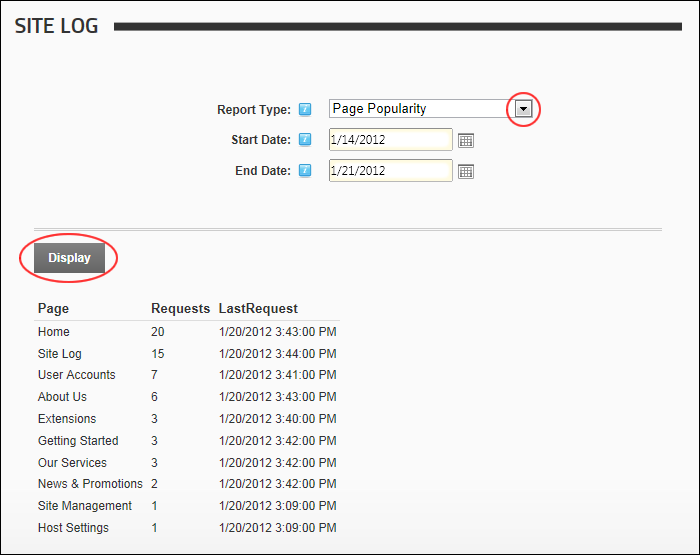

Viewing a Site Report
How to view a site report using the Site Log module.
- Navigate to Admin > Advanced Settings >
 Site Log - OR - Navigate to a Site Log module.
Site Log - OR - Navigate to a Site Log module.
- At Report Type, select the required report. You can now skip to Step 5 if you want to view a report for last seven days including today.
- Optional. At Start Date, click the Calendar
 button and select the start date for the report.
button and select the start date for the report.
- Optional. At End Date, click the Calendar button and select the end date for the report.
- Click the Display button to view the report results. If there aren't any matching results for the selected report and date range, then the "No records were found" message is displayed at the top of the module.

Viewing a Site Log Report
Related Topics:
-
"Working with the Calendar"